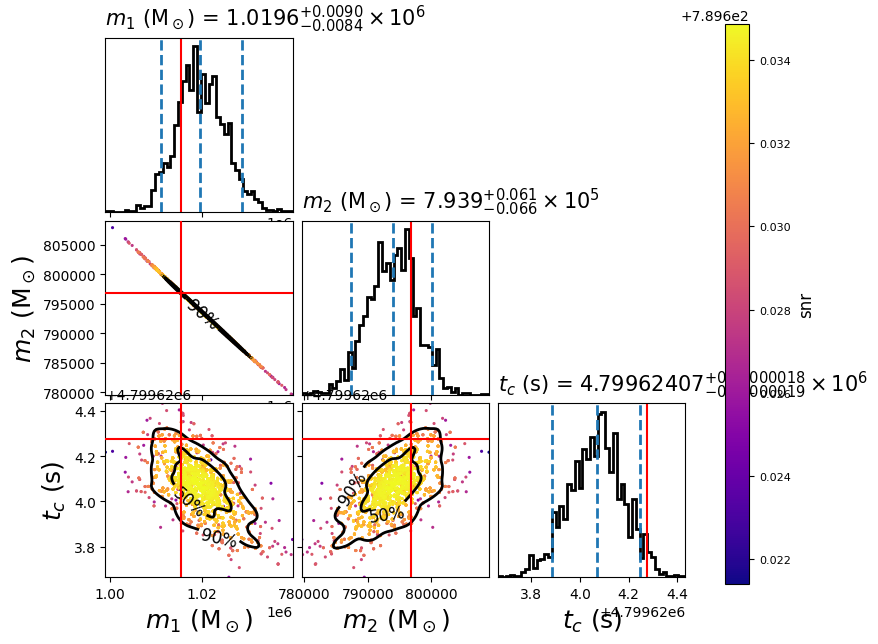

LISA parameter estimation for simulated SMBHB from LDC
This example shows how to use PyCBC for parameter estimation of supermassive black hole binaries (SMBHB)
in LISA mock data. The data are generated from
LISA Data Challenge 2a: Sangria,
and BBHx package is used to generate the IMRPhenomD template and calculate
the corresponding TDI response for LISA. Relative binning (heterodyned likelihood)
is used during sampling to speed up the computation of likelihood functions. Before doing parameter estimation,
you need to install BBHx and the corresponding PyCBC waveform plugin,
please click the corresponding link to see the detailed description of the installation.
First, we create the following configuration file, here we just set chirp mass, mass ratio and tc as variable parameters, tc, eclipticlongitude, eclipticlatitude and polarization are defined in the LISA frame:
[data]
instruments = LISA_A LISA_E LISA_T
trigger-time = 4800021.15572853
analysis-start-time = -4800021
analysis-end-time = 26735978
pad-data = 0
sample-rate = 0.2
psd-file= LISA_A:A_psd.txt LISA_E:E_psd.txt LISA_T:T_psd.txt
frame-files = LISA_A:A_TDI_v2.gwf LISA_E:E_TDI_v2.gwf LISA_T:T_TDI_v2.gwf
channel-name = LISA_A:LA:LA LISA_E:LE:LE LISA_T:LT:LT
[model]
name = relative
low-frequency-cutoff = 0.0001
high-frequency-cutoff = 1e-2
epsilon = 0.01
mass1_ref = 1015522.4376
mass2_ref = 796849.1091
mchirp_ref = 781969.693924104
q_ref = 1.2744225048415756
tc_ref = 4799624.274911478
distance_ref = 17758.367941273442
spin1z_ref = 0.597755394865021
spin2z_ref = 0.36905807298613247
inclination_ref = 1.5970175301911231
[variable_params]
mchirp =
q =
tc =
[static_params]
; LDC-Sangria uses TDI-1.5
tdi = 1.5
ref_frame = LISA
approximant = BBHX_PhenomD
coa_phase = 4.275929308696054
eclipticlongitude = 5.4431083771985165
eclipticlatitude = -1.2734504596198182
polarization = 0.22558110042980073
spin1z = 0.597755394865021
spin2z = 0.36905807298613247
distance = 17758.367941273442
inclination = 1.5970175301911231
t_obs_start = 31536000
f_lower = 1e-4
; Put LISA behind the Earth by ~20 degrees.
t_offset = 7365189.431698299
[prior-mchirp]
name = uniform
min-mchirp = 703772.7245316936
max-mchirp = 860166.6633165143
[prior-q]
name = uniform
min-q = 1.1469802543574181
max-q = 1.401864755325733
[prior-tc]
name = uniform
min-tc = 4798221.15572853
max-tc = 4801821.15572853
[waveform_transforms-mass1+mass2]
name = mchirp_q_to_mass1_mass2
[sampler]
name = dynesty
dlogz = 0.1
nlive = 150
; NOTE: While this example doesn't sample in polarization, if doing this we
; recommend the following transformation, and then sampling in this coordinate
;
; [waveform_transforms-polarization]
; name = custom
; inputs = better_pol, eclipticlongitude
; polarization = better_pol + eclipticlongitude
By setting the model name to relative we are using
Relative model.
In this simple example, we do the parameter estimation for the first SMBHB signal in the LDC Sangria dataset (you can also run parameter estimation for other SMBHB signals by choosing appropriate prior range), we need download the data first (MBHB_params_v2_LISA_frame.pkl contains all the true parameters):
set -e
download_if_absent() {
local URL="$1"
local FILENAME=$(basename "$URL")
if [ ! -f "$FILENAME" ]; then
echo "Downloading $FILENAME"
curl -O -L --show-error --silent "$URL"
else
echo "File $FILENAME already exists, download skipped"
fi
}
for channel in A E T
do
strain_file=${channel}_TDI_v2.gwf
download_if_absent https://zenodo.org/record/7497853/files/${strain_file}
psd_file=${channel}_psd.txt
download_if_absent https://zenodo.org/record/7497853/files/${psd_file}
done
params_file=MBHB_params_v2_LISA_frame.pkl
download_if_absent https://zenodo.org/record/7497853/files/${params_file}
Now run:
#!/bin/sh
export OMP_NUM_THREADS=1
pycbc_inference \
--config-files `dirname "$0"`/lisa_smbhb_relbin.ini \
--output-file lisa_smbhb_ldc_pe.hdf \
--nprocesses 1 \
--force \
--verbose
This will run the dynesty sampler. When it is done, you will have a file called
lisa_smbhb.hdf which contains the results. It should take about three minutes to
run.
To plot the posterior distribution after the last iteration, you can run the following simplified script:
pycbc_inference_plot_posterior \
--input-file lisa_smbhb_ldc_pe.hdf \
--output-file lisa_smbhb_mass_tc_0.png \
--z-arg snr --plot-scatter --plot-marginal \
--plot-contours --contour-color black \
--parameters \
'mass1_from_mchirp_q(mchirp,q)':mass1 \
'mass2_from_mchirp_q(mchirp,q)':mass2 \
tc \
--expected-parameters \
'mass1_from_mchirp_q(mchirp,q)':1015522.4376 \
'mass2_from_mchirp_q(mchirp,q)':796849.1091 \
tc:4799624.274911478 \
Or you can run the advanced one:
import subprocess
import pickle
import numpy as np
from pycbc.conversions import q_from_mass1_mass2, mchirp_from_mass1_mass2
def spin_ldc2pycbc(mag, pol):
return mag*np.cos(pol)
def plt(index):
with open('./MBHB_params_v2_LISA_frame.pkl', 'rb') as f:
params_true_all = pickle.load(f)
p_index = index
params_true = params_true_all[p_index]
print(params_true)
modes = [(2,2)]
q = q_from_mass1_mass2(params_true['Mass1'], params_true['Mass2'])
mchirp = mchirp_from_mass1_mass2(params_true['Mass1'],params_true['Mass2'])
params = {'approximant': 'BBHX_PhenomD',
'mass1': params_true['Mass1'],
'mass2': params_true['Mass2'],
'inclination': params_true['Inclination'],
'tc_lisa': params_true['CoalescenceTime_LISA'],
'polarization_lisa': params_true['Polarization_LISA'],
'spin1z': spin_ldc2pycbc(params_true['Spin1'], params_true['PolarAngleOfSpin1']),
'spin2z': spin_ldc2pycbc(params_true['Spin2'], params_true['PolarAngleOfSpin2']),
'coa_phase': params_true['PhaseAtCoalescence'],
'distance': params_true['Distance'],
'eclipticlatitude_lisa': params_true['EclipticLatitude_LISA'],
'eclipticlongitude_lisa': params_true['EclipticLongitude_LISA'],
'mchirp': mchirp,
'q': q,
'mode_array': modes
}
plot_code = f"""
pycbc_inference_plot_posterior \
--input-file lisa_smbhb_ldc_pe.hdf \
--output-file lisa_smbhb_mass_tc_{p_index}.png \
--z-arg snr --plot-scatter --plot-marginal \
--plot-contours --contour-color black \
--parameters \
mass1_from_mchirp_q(mchirp,q):mass1 \
mass2_from_mchirp_q(mchirp,q):mass2 \
tc \
--expected-parameters \
mass1_from_mchirp_q(mchirp,q):{params['mass1']} \
mass2_from_mchirp_q(mchirp,q):{params['mass2']} \
tc:{params['tc_lisa']} \
"""
return plot_code
# The index of first SMBHB in LDC Sangria (0-14) is 0.
p = [0]
for i in p:
process = subprocess.Popen(plt(i).split(), stdout=subprocess.PIPE)
output, error = process.communicate()
print('rel{} image created'.format(i))
You can modify this advanced plot script to generate the posterior of any SMBHB signals in the LDC Sangria dataset. In this example it will create the following plot:
{kind=link}
The scatter points show each walker’s position after the last iteration. The points are colored by the SNR at that point, with the 50th and 90th percentile contours drawn. The red lines represent the true parameters of injected signal.